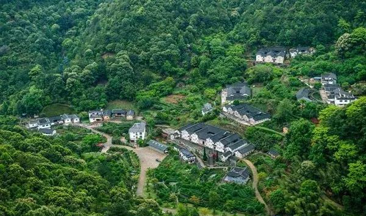

发现岭南最美的古村落
千年瑶寨，云雾里的秘境
广东小桂林，峰林间的田园诗

客家围龙深处的山水画廊
丹霞山脚的隐世田园
输入你想去的广东乡村，开始规划
AI 乡村行程智能规划器 · 发现岭南乡愁
所有 API Key 由代理服务器统一管理，前端不存储任何密钥。
🔐 密钥安全说明：AI Key 和 高德 Key 保存在服务器端 .env 文件中，
前端通过本地代理 (localhost:3456) 转发请求，浏览器的网页源码中不会出现任何密钥。
让 AI 为你重新规划一条不同的路线